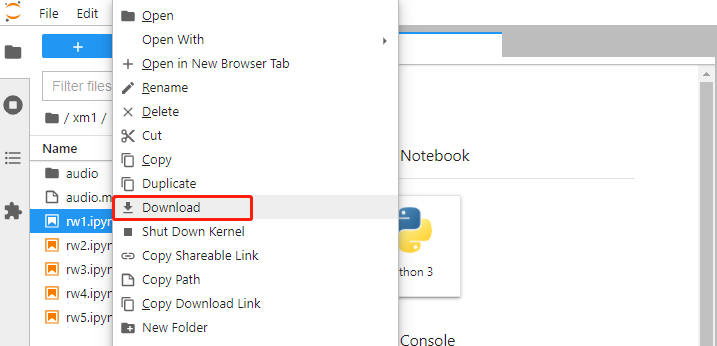

简介
- 更多信息请移步 zspt.edu.cn.
- 更多信息请移步 smartyg.com.
关于本文档
中山职业技术学院 & 广州云歌信息科技有限公司图像处理图像识别人脸识别语音识别自然语言处理
关于本书的互动性
我们提供了一个Jupyter-Lab环境供大家一边看书一边实验,实验与文档无缝衔接。但由于是公用的，请大家不要修改其中的代码。当发现程序运行不起来的时候，尝试停止kernel。密码：123456

说明
- 本书的开发环境使用JupterLab
- 请不要删除代码 可以新建文件夹来编写自己的代码
- 开发环境中的代码与实际代码有些许不同，是为了在JupyterLab中获得更好的体验，本地运行代码以书中为准
- 本书中的一些项目由于需要本地摄像头、麦克风、GPU加速等，所以某些项目只提供代码，可以将示例代码下载到本地运行即可！下载方式可参考如下：

jupyter界面如下
关于我们
- 中山职业技术学院 zspt.edu.cn.
- 广州云歌信息科技有限公司 smartyg.com.
- AI 体验中心 ai.smartyg.com.
- AI 在线开发平台 aistudio.smartyg.com.
关注我们